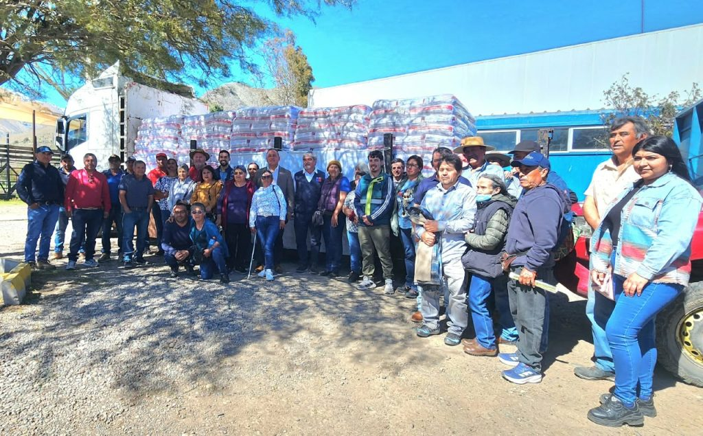

Actividades y encuentros de la comuna
Conoce las iniciativas y actividades que reúnen a los habitantes de Vicuña.
Leer más →Conoce la gestión municipal, accede a los servicios y trámites disponibles, y encuentra información relevante para ti y tu comunidad.
Conoce nuestra municipalidad →Encuentra de manera rápida la información y los servicios más importantes de la municipalidad.
Información sobre trámites y servicios disponibles.
↗ 02 / ACTUALIDADConoce las novedades y actividades de la comuna.
↗ 03 / MUNICIPIOConoce la organización y el trabajo municipal.
↗ 04 / TERRITORIODescubre los paisajes y atractivos de Vicuña.
↗Revisa los avisos, comunicados e información municipal para mantenerte al tanto de las actividades, los servicios y las novedades de la comuna.
Revisar información →Actividades, iniciativas y novedades de nuestra comuna.
Conoce las iniciativas y actividades que reúnen a los habitantes de Vicuña.
Leer más →
El paisaje, la cultura y las tradiciones forman parte de la identidad de nuestra comuna.
Leer más →
Revisa la información disponible y conoce el trabajo que se desarrolla en la comuna.
Leer más →Entre cielos despejados, paisajes naturales y tradiciones locales, Vicuña conserva una identidad vinculada a su entorno y a las personas que lo habitan.
Explorar Vicuña →Información sobre la gestión municipal y los canales disponibles para la comunidad.
La Municipalidad de Vicuña trabaja para responder a las necesidades de sus habitantes y contribuir al desarrollo de la comuna.
A través de sus distintas áreas, pone a disposición información, servicios y canales de atención para facilitar la relación entre el municipio y la comunidad.
Información institucional y organización municipal.
Orientación sobre trámites y atención municipal.
Información de interés para los habitantes.
Canales de comunicación con el municipio.